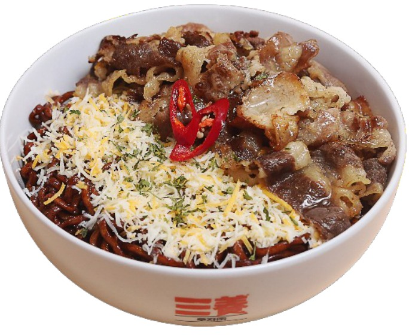
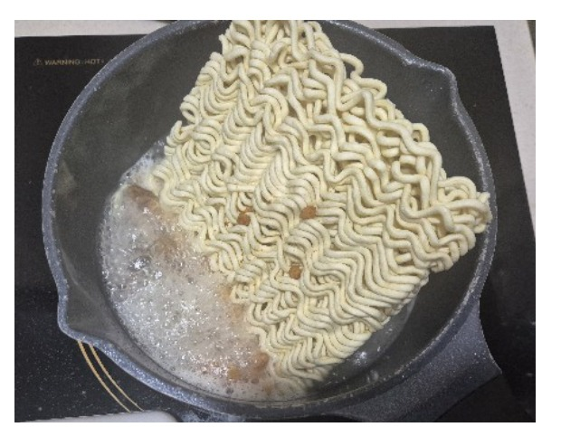
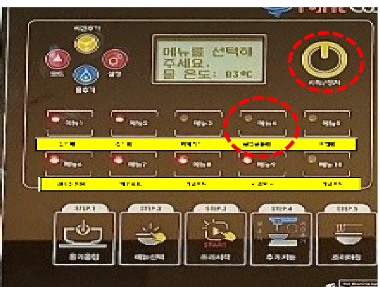
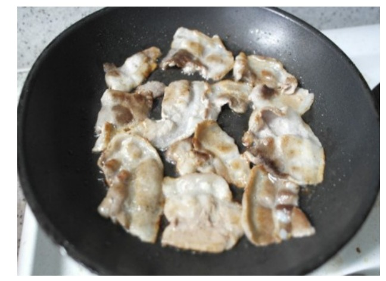
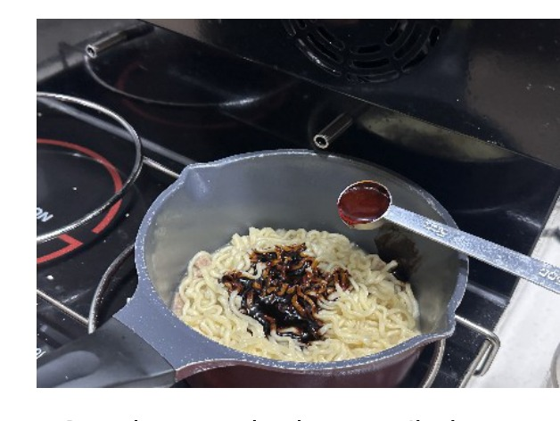
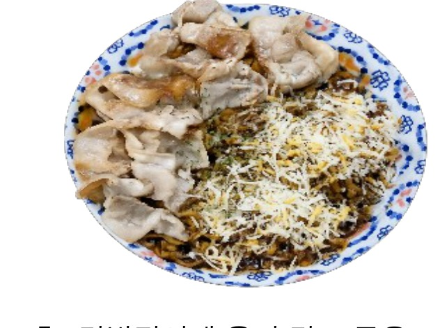

| 메뉴명 | 불닭짜르치 |
|---|
| 판매가격 | 6,500원 |
|---|
| 원재료 | 짜르르, 대패삼겹살, 엔젤헤어치즈, 불닭소스, 파슬리 |
|---|
| 사용 부자재 | 덮밥접시 |
|---|
| 메뉴특징 | 매콤한 불닭소스와 짜르르의 만남, 노릇노릇 구운 대패삼겹살의 맛있는 환상 조합! |
|---|
※ 제조 후 최대한 빨리 제공할 것.
조리방법

1
냄비에 짜르르 면, 건더기스프를 넣는다.

2
라면조리기 위에 올려 [불닭볶음면] 모드 선택 후 [시작/정지] 버튼을 누르고, [시간추가]를 1회 눌러 조리를 시작한다.

3
소분된 삼겹살 100g을 팬에 올려 인덕션 6번에서 3분~3분 30초간 앞뒤로 노릇하게 굽는다.

4
다 끓으면 짜르르 액상스프, 불닭소스 1ts(8g)을 넣고 잘 섞는다.

5
덮밥접시에 옮겨 담고 구운 대패삼겹살, 엔젤헤어치즈 10g을 올려 완성한다. (단무지 제공)
※ 기존 라면조리기 : [볶음라면] 모드로 조리하기